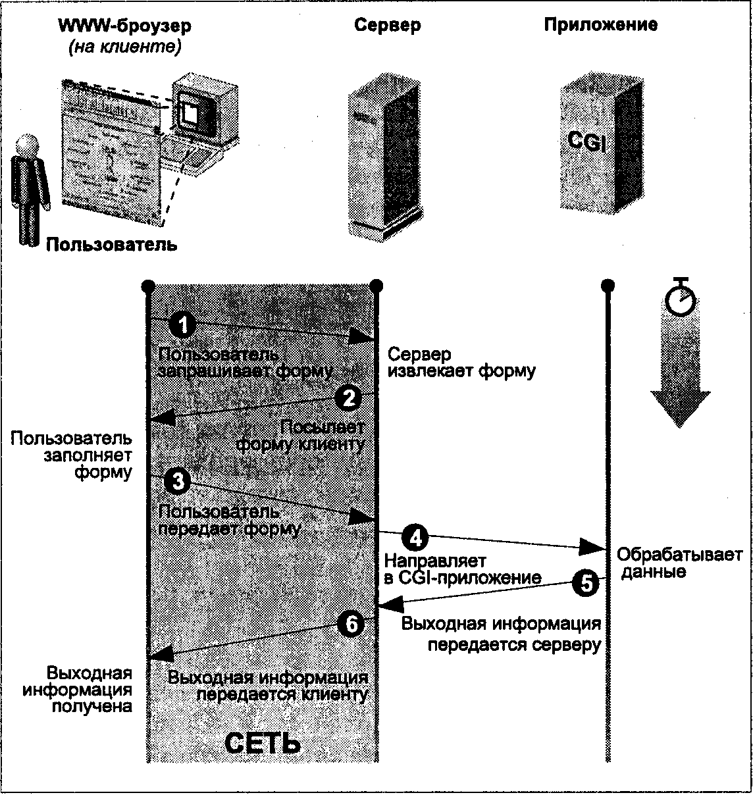
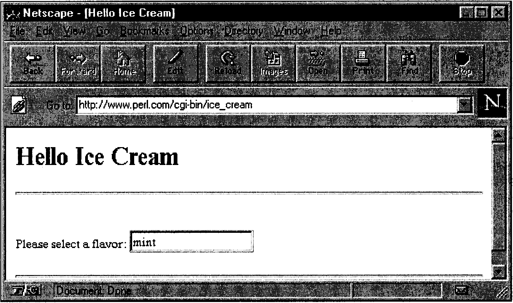
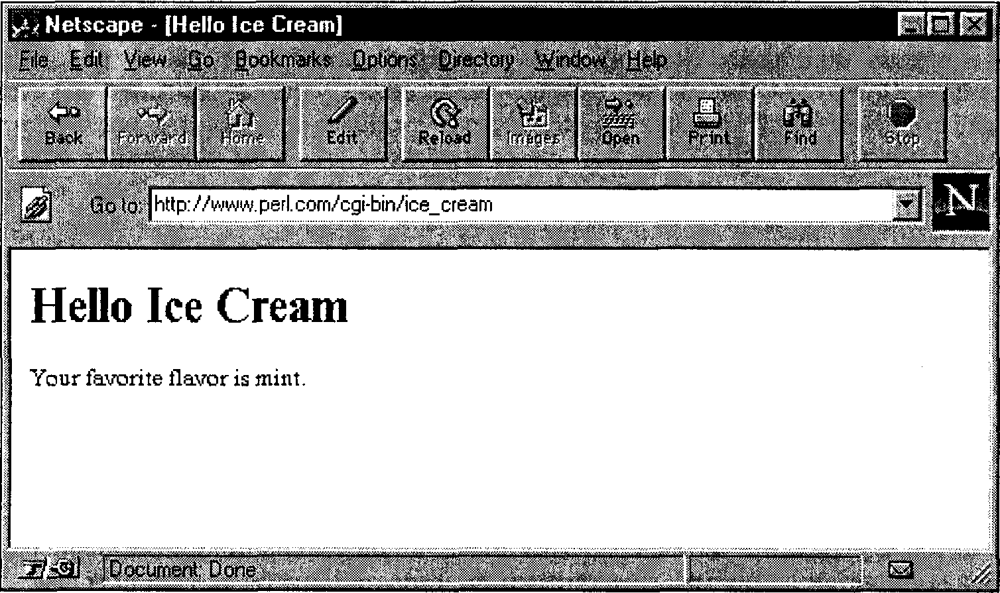
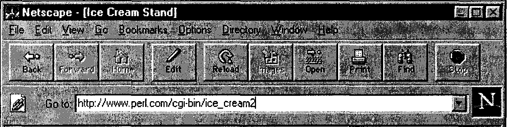
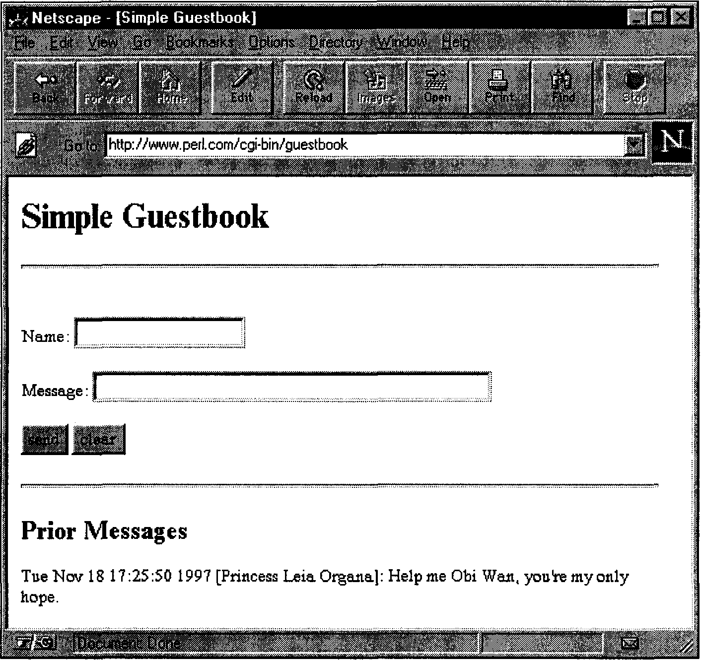

Глава 19
В этой главе:
СG -программирование
Если в течение последних нескольких лет вы не сидели взаперти в деревянной хижине без злектричества, то вы наверняка слышали о World Wide Web. Web-адреса (больше известные как URL) сейчас можно найти везде: на рекламних плакатах и в титрах кинофильмов, на обложках журна-лов и на страницах других изданий, от газет до правительственных отчетов.
Многие из самых интересных Web-страниц включают разного рода формы, предназначенные для ввода данных пользователем. Вы вводите данные в такую форму и щелкаете на кнопке или рисунке. Зто действие запускает некую программу на Web-сервере, которая изучает введенные вами данные и генерирует новую выходную информацию. Иногда зта программа (широко известная как программа общего шлюзового интерфейса, или CGI-программа) представляет собой просто интерфейс к существующей базе данных; она преобразует введенные вами данные в нечто понятное для зтой базы данных, а выходную информацию базы данных в нечто понятное для Web-броузера (обычно в HTML-форме).
CGI-программы не просто обрабатывают данные, введенные в форму. Они вызываются и тогда, когда вы щелкаете на графическом изображении, и фактически могут использоваться для отображения всего того, что "видит" ваш броузер. Web-страницы с CGI-поддержкой зто не безликие и нудньге документы, а удивительно живые страницы с динамически изменяющимся содержимым. Именно динамическая информация делает Web интересньш и интерактивным источником информации, а не просто средством, предна-значенньш для чтения книги с терминала.
Независимо от того, во что вас, возможно, заставят поверить все зти отскакивающие шарики и прыгающие обьявления, Web содержит также большой обЁем текста. Поскольку мы имеем дело с текстом, файлами, сетевыми коммуникациями и в некоторой степени с двоичными данными, то Perl идеально подходит для Web-программирования.
В зтой главе мы не только изучим основы CGI-программирования, но и параллельно получим определенные начальные сведения о гипертекстовых ссылках, библиотечных модулях и обьектно-ориентированном программи-ровании на Perl. В конце главы мы дадим начальные сведения о применении Perl для других видов Web-программирования.
Если рассматривать зту главу как отдельное пособие, следует отметить, что ее (как и любого другого документа обьемом меньше пары сотен страниц) недостаточно для изучения более сложных тем, затронутых здесь, в частности обьектно-ориентированного программирования и методов использования различных типов ссылок и запросов в WWW. Однако, будучи средством всего лишь предварительного ознакомления с тем, что вас ждет, представленные здесь примеры и пояснення к ним, возможно, побудят вас подробнее ознакомиться с затронутыми темами и дадут вам ориентиры для выбора соответствующих учебников. А если вы любите учиться на практико, они помогут вам сразу написать некоторые полезные программы на основе тех моделей, которые здесь представлены.
Мы предполагаем, что вы уже в основном знакомы с HTML.
Модуль CGI.pm
Начиная с версии 5.004, в состав стандартного дистрибутива Perl вклю-чается модуль CGI.pm, который все знает и все умеет*.
Зтот модуль, который написал Линкольн Штейн, автор хорошо извест-ной книги How to Setup and Maintain Your Web Site, превращает процедуру создания CGI-программ на Perl в легкую прогулку. Как и сам Perl, CGI.pm является платформо-независимым, позтому его можно использовать прак-тически с любой ОС, от UNIX и Linux до VMS; он работает даже в таких системах, как Windows и MacOS.
* Если у вас инсталлирована одна из более ранних версии Perl (но как минимум 5.001) и вы еще не собрались переходить на новую, просто получите CGI.pm из CPAN.
Если CGI.pm уже инсталлирован у вас в системо, вы можете прочесть его полную документацию, воспользовавшись любым из способов, которые вы используете для чтения man-страниц Perl, например с помощью команд тап(1) или perldoc(l) либо обратившись к HTML-варианту документации. Если ничего не получается, прочтите файл CGI.pm'. документация на модуль встроена в сам модуль, представленими в простом формате pod *.
Разрабатывая CGI-программы, держите зкземпляр man-страницы модуля CGI.pm под рукой. Она не только содержит описание функций зтого модуля, но и загружается вместе со всевозможными примерами и советами.
Ваша CGI-программа в контексте
На рис. 19.1 показаны взаимосвязи между Web-броузером, Web-сервером и CGI-программой. Когда вы, работая со своим броузером, щелкаете на какой-либо ссылке, помните, что с зтой ссьшкой связан универсальный локатор ресурса, URL (Uniform Resource Locator). Зтот URL указывает на Web-сервер и ресурс, доступний через данини сервер. Таким образом, броузер взаимодействует с сервером, запрашивая указаними ресурс. Если, скажем, ресурс представляет собой HTML-форму, предназначенную для заполнения, то Web-сервер загружает зту форму в броузер, который затем выводит ее на зкран, чтобы вы могли ввести требуемне данные.
Каждое предназначенное для ввода текста поле в зтой форме имеет имя (указанное в HTML-коде формы) и соответствующее значение, которым является все, что вы вводите в зтом поле. Сама форма связана (через HTML-директиву <form>) с CGI-программой, которая обрабатывает данные, введенные в форму. Когда вы, заполнив форму, щелкаете на кнопке Submit, броузер обращается к URL CGI-программы. Перед зтим он добав-ляет в конец URL так называемую строку запроса, которая состоит из одной или более пар имя=з наче ни ; каждое имя зто имя поля, предназначенного для ввода текста, а каждое значение данные, которые вы ввели. Таким образом, URL, в который броузер передает данные, введенные вами в форму, выглядит приблизительно так (строкой запроса считается все, что стоит после вопросительного знака):
http://www.SOMEWHERE.org/cgi-bin/some_cgi_prog?flavor=vanilla&size=double
Вы видите здесь две пары имя=значение. Такие пары отделяются друг от друга амперсандом (&). Работая с модулем CGI.pm, об зтой детали можете не беспокоиться. Компонент /cgi-bm/some_cgi_prog/WA рассмотрим немного позд-нее; на данный момент важно лишь то, что он содержит путь к CGI-программе, которая будет обрабатывать данные, введенные в HTML-форму.
* Pod сокращенно обозначает plain old documentation ("обычная старая документация"). Зто упрощенная форма представлення, испояьзуемая для всей документации на Perl. Принцип работы зтого формата изложен на man-странице perlpod(l), а некоторыс pod-трансляторы описанм на man-страницах pod2man(l), pod2html(l) и pod2text(l).

Рис. 19.1. Заполнение форми с привлечением CGI
Когда Web-сервер (в данном случае www.SOMEWHERE.org) получает URL от вашего броузера, он вызывает указанную CGI-программу и передает в нее в качестве аргументов пары имя=значение. Программа затем делает то, что должна делать, и (как правило) возвращает HTML-код серверу, который, в свою очередь, загружает его в броузер для представлення пользователю.
"Переговоры" между броузером и сервером, а также между сервером и CGI-программой ведутся в соответствии с протоколом, известным как HTTP. При написаний CGI-программы об зтом беспокоиться не нужно, т.к. модуль CGI.pm сам решает все вопросы, связанные с использованием протокола.
Способ получения CGI-программой ее аргументов (й другой информа-ции) от броузера через сервер описывается спецификацией Common Gateway Interface. Об зтом тоже не нужно беспокоиться; как вы вскоре увидите, CGI.pm автоматически обрабатывает зти аргументы, не требуя от вас каких-либо дополнительных действий.
Наконец, вам следует знать, что CGI-программы могут работать с любым HTML-документом, а не только с формой. Например, вы могли бы написать такой HTML-код:
Click <a href="http://www.SOMEWHERE.org/cgi-bin/fortune.cgi">here</a> to receive your fortune.
Зцесь fortune.cgi программа, которая просто вызывает программу fortune (в UNIX-системах). В данном случае в CGI-программу не вводятся никакие аргументы. Другой вариант: HTML-документ мог бы содержать две ссылки для пользователя одну для получения предсказания судьбы, вторую для выяснения текущей даты. Обе ссылки могли бы указывать на одну и ту же программу в одном случае с аргументом fortune, поставленным в URL после вопросительного знака, а в другом случае с аргументом date. Зти HTML-ссылки выглядели бы так:
<а href="http://www.SOMEWHERE.org/agi-bin/fortune_or_date?fortune"> <a href="http://www.SOMEWHERE.org/cgi-bin/fortune_or_date?date">
CGI-программа (в данном случае fortune_or_date) определила бы, какой из двух возможных аргументов получен, и вьшолнила бы соответственно программу fortune или программу date.
Как видите, аргументи вовсе не должны иметь формат имя=значение, характерний для HTML-форм. Вы можете написать CGI-программу, которая будет делать практически все, что вы пожелаете, и можете передавать ей практически любые аргументы.
В зтой главе мы будем, главным образом, рассматривать применение HTML-форм. При зтом мы предполагаем, что вы уже знакомы с простими HTML-кодами.
Простейшая CGI-программа
Вот исходный код вашей первой CGI-программы. Она настолько проста, что в ней даже не пришлось использовать модуль CGI.pm:
#!/usr/bin/perlS -w
#самая легкая из CGI-програми print END of Multiple Text;
Content-type: text/html
<HTML>
<HEAD>
<TITLE>Hello World</TITLE>
</HEAD>
<BODY>
<Hl>Greetings, Terrans!</Hl>
</BODY </HTML>
END_of_Multiline_Text
Каждый раз, когда зта программа вызывается, она выдает на зкран одно и то же. Зто, конечно, не особенно интересно, но позднее мы сделаем ее более занимательной.
Зта программка содержит всего один оператор: вызов функции print. Несколько забавно вьп-лядящий аргумент зто так называемый here-доку-мент. Он состоит из двух знаков "меньше чем" и слова, которое мы назовем конечной лексемой. Для программиста, работающего с shell, написанное, возможно, будет похоже на переадресацию ввода-вывода, но на самом деле зто просто удобный способ взятия в кавычки строкового значення, зани-мающего несколько строк. Зто строкове значение начинается на следующей строке программы и продолжается до строки, содержащей конечную лексему, которая должна стоять в самом начале зтой строки; ничего другого в зтой строке быть не должно. Неге-документы особенно полезны для создания HTML-документов.
Первая часть зтого строкового значення определенно самая важная:
строка Content-Type задает тип генерируемой выходной информации. Сразу за ней идет пустая строка, которая не должна содержать пробелов и знаков табуляции.
У большинства новичков первые CGI-программы отказываются рабо-тать, потому что пользователи забывают об зтой пустой строке, отделяющей заголовок (нечто вроде заголовка сообщения злектронной почты) от следую-щего за ним необязательного тела*. После пустой строки следует HTML-документ, посылаемый в броузер пользователя, где он форматируется и ото-бражается.
Сначала добейтесь, чтобы ваша программа правильно вьшолнялась при вызове ее из командной строки. Зто необходимый, но не достаточный шаг для того, чтобы обеспечить функционирование вашей программы как сценария, работающего на сервере. Ошибки могут возникать и в других местах программы;
см. ниже раздел "Поиск и устранение ошибок в CGI-программах".
Если программа должным образом работает при вызове ее из командной строки, необходимо инсталлировать ее на компьютере-сервере. Приемлемые места размещения зависят от сервера, хотя для CGI-сценариев часто исполь-зуется каталог /usr/etc/httpd/cgi-bin/ и его подкаталоги. Обсудите зтот вопрос с Web-мастером или системным администратором.
После завершення инсталляции вашей программы в CGI-каталоге ее можно выполнять, указывая броузеру ее путевое имя в составе URL. Напри-мер, если ваша программа называется howdy, URL будет выглядеть так:
http://vww.SOMEWHERE.org/cgi-bin/howdy.
Сервери обычно позволяют использовать вместо ддинных путевых имен псевдонимы. Сервер, имеющий адрес www.SOMEWHERE.org, может запросто перевести cgi-bin/howdy, содержащийся в зтом URL, в нечто вроде usr/etc/httpd/ cgi-bin/howdy. Ваш системний администратор или Web-мастер может подска-зать, какой псевдоним следует использовать при обращении к вашей программе.
* Зтот заголовок необходим для протокола HTTP, о котором мы упоминали выше.
Передача параметров через CGI
Для передачи параметров в CGI-программы (точнее, в большинство CGI-программ) никакие формы не нужны. Чтобы убедиться в этом, замените URL на http://www.SOMEWHERE.org/cgi-bin/ice_creain?flavor=mint.
Когда вы "нацеливаете" свой броузер на этот URL, броузер не только просит Web-сервер вызвать программу ice_cream, но и передает в нее строку flavor=mint. Теперь дело программы прочитать данную строку-аргумент и разобрать ее. Эта задача не так проста, как кажется. Многие программы пытаются решить ее и разобрать запрос самостоятельно, но большинство "самодельных" алгоритмов время от времени отказывают. Учитывая то, насколько сложно найти правильное решение такой задачи для всех возможных случаев, вам, наверное, не следует писать код самим, особенно при наличии отличных готовых модулей, которые выполняют этот хитрый синтаксический анализ за вас.
К вашим услугам модуль CGI.pm, который всегда разбирает входящий CGI-запрос правильно. Чтобы вставить этот модуль в свою программу, просто напишите
use CGI;
где-нибудь в начале программы*.
Оператор use похож на оператор # include языка С тем, что в процессе компиляции извлекает код из другого файла. Но он допускает также использование необязательных аргументов, показывающих, к каким функциям и переменным из этого модуля вы хотели бы обращаться. Поместите их в список, следующий за именем модуля в операторе use, и вы сможете обращаться к указанным функциям и переменным так, как будто они ваши собственные.
В данном случае все, что нам нужно использовать из модуля CGI.pm это функция param () **.
Если аргументы не указаны, функция param () возвращает список всех полей, имевшихся в HTML-форме, на которую отвечает данный CGI-сце-нарий. (В текущем примере это поле flavor, а в общем случае список всех имен, содержащихся в строках имя=значение переданной формы.) Если указан аргумент, обозначающий поле, то param () возвращает значение (или значения), связанные с этим полем. Следовательно, param (" flavor") возвращает "mint", потому что в конце URL мы передали ?flavor=mint.
* Имена всех Perl-модулей имеют расширение рт. Более того, оператор use подразумевает это расширение. О том, как создавать свои собственные модули, вы можете узнать в главе 5 книги Programming Perl или на man-странице perlmod(l).
** Некоторые модули автоматически экспортируют все свои функции, но, поскольку CGI.pm это на самом деле объектный модуль, замаскированный под обычный, мы должны запрашивать его функции явно.
Несмотря на то что в нашем списке для оператора use имеется всего один элемент, мы будем использовать запись qw (). Благодаря этому нам будет легче впоследствии раскрыть этот список.
#!/usr/local/bin/perlS -w
# программа ответа на форму о любимом сорте мороженого (версия 1) use CGI qw(param);
print END_of_Start;
Content-type: text/html
<HTML>
<HEAD>
<TITLE>Hello World</TITLE>
</HEAD>
<BODY>
<Hl>Greetings, Terrans!</H1> END_of_Start
my $favorite = param("flavor");
print "<P>Your favorite flavor is $favorite. print All_Done;
</BODY>
</HTML> All Done
Как сократить объем вводимого текста
Вводить все равно приходится очень много, но в CGI.pm есть множество удобных функций, упрощающих набор. Каждая из этих функций возвращает строковое значение, которое вы будете выводить. Например, header () возвращает строковое значение, содержащее строку Content-type с последующей пустой строкой, start_html (строка) возвращает указанную строку как HTML-титул (название документа), hi (строка) возвращает указанную строку как HTML-заголовок первого уровня, а р (строка) возвращает указанную строку как новый HTML-абзац.
Мы могли бы перечислить все эти функции в списке, прилагаемом к оператору use, но такой список разросся бы до небывалых размеров. В CGI.pm, как и во многих других модулях, имеются так называемые директивы импорта метки, которые обозначают группы импортируемых функций. Вам нужно лишь поставить желаемые директивы (каждая из которых начинается двоеточием) в начале своего списка импорта. В модуле CGI.pm имеются такие директивы:
: cgi
Импортировать все методы обработки аргументов, например param ().
: form
Импортировать все методы создания заполняемых форм, например text-field().
:html2
Импортировать все методы, которые генерируют стандартные элементы HTML 2.0.
:htmi3
Импортировать все методы, которые генерируют элементы, предложенные в HTML 3.0 (такие как <table>, <super> и <sub>).
:netscape
Импортировать все методы, которые генерируют расширения HTML, характерные для Netscape.
:shortcuts
Импортировать все сокращения, генерируемые HTML (т.е. "html2" + "html3" + "netscape").
:standard
Импортировать "стандартные" возможности: "html2", "form" и "cgi".
:all
Импортировать все имеющиеся методы. Полный список приведен в модуле CGI.pm, где определяется переменная %tags.
Мы будем использовать только директиву : standard. (Подробная информация об импортировании функций и переменных из модулей приведена в главе 7 книги Programming Perl, а также на man-странице Exporter 3).}
Вот как выглядит наша программа со всеми сокращениями, которые используются в CGI.pm:
#!/usr/local/bin/perlS -w
# cgi-bin/ice_cream # программа ответа на форму о любимом
t сорте мороженого (версия 2) use CGI qw(:standard);
print header() ;
print start_html("Hello World"), hi ("Hello World");
my $favorite = param("flavor");
print p("Your favorite flavor is $favorite.");
print end_html();
Видите, насколько это проще? Вам не нужно беспокоиться о декодировании данных формы, о заголовках и HTML-тексте, если вы этого не хотите.
Генерирование формы
Если вам надоело вводить параметры своей программы в броузер создайте заполняемую форму. К таким формам привыкли большинство пользователей. Компоненты формы, которые принимают вводимые пользователем данные, иногда называются vidgets; считается, что этот термин гораздо удобнее, чем "устройства графического ввода". Такие компоненты форм включают одно- и многостроковые текстовые поля, всплывающие меню, прокручиваемые списки, различные виды кнопок и отмечаемых блоков.
Создайте следующую HTML-страницу, которая включает форму с одним компонентом "текстовое поле" и кнопкой передачи. Когда пользователь щелкает на кнопке передачи*, вызывается сценарий ice_cream, заданный атрибутом ACTION.
<!-- ice_cream.html > <HTML>
<HEAD>
<TITLE>HeUo Ice Cream</TITLE>
</HEAD>
<BODY>
<Hl>Hello Ice Cream!</Hl>
<FORM ACTION-"http://www.SOMEWHERE.org/cgi-bin/ice_cream">
What's your flavor? <INPUT NAME="favorite" VALUE="mint">
<P>
<INPUT TYPE="submit">
</FORM>
</BODY> </HTML>
Помните, что CGI-программа может выдавать ту выходную HTML-информацию, которую вы ей укажете. Эта информация будет затем передаваться в тот броузер, который обратится к URL данной программы. CGI-программа может, таким образом, не только реагировать на данные, введенные пользователем в форму, но и генерировать HTML-страницу с формой. Более того, одна программа может выполнять одну за другой обе эти задачи. Все, что вам нужно сделать, это разделить программу на две части, которые делают разные вещи в зависимости от того, была ли программа вызвана с аргументами или нет. Если аргументов не было, программа посылает в броузер пустую форму; в противном случае аргументы содержат данные, введенные пользователем в ранее переданную форму, и программа возвращает в броузер ответ на основании этих данных.
* Некоторые броузеры позволяют обходиться без кнопки передачи, если форма содержит только одно поле для ввода текста. Если курсор находится в этом поле и пользователь нажимает клавишу [Enter], это считается запросом на передачу. Однако лучше здесь использовать традиционный способ.
При размещении всех компонентов программы в одном CGI-файле упрощается ее сопровождение. Цена незначительное увеличение времени обработки при загрузке исходной страницы. Вот как все это выглядит:
#!/usr/local/bin/perlS -w
# программа ответа на форму о любимом сорте мороженого
# *и генерирования этой формы* (версия 3) use CGI qw(:standard);
my $favorite = param("flavor");
print header;
print start_html("Hello Ice Cream"), hi ("Hello Ice Cream");
if ($favorite) {
print p("Your favorite flavor is $favorite. ");
} else {
print hr, start_form;
print p ("Please select a flavor: ", textfield("flavor","mint"));
print end form, hr;
Если во время работы с броузером вы щелкнете на ссылке, которая указывает на эту программу (и если ссылка в конце URL не содержит ?whatever), то увидите экран, подобный изображенному на рис. 19.2. Текстовое поле изначально содержит значение по умолчанию, но это значение заменяется данными, введенными пользователями (если они есть).

Рис. 19.2. Исходная заполняемая форма
Теперь заполните поле Please select a flavor, нажмите клавишу [Enter], и вы увидите то, что показано на рис. 19.3.

Рис. 19.3. Результат обработки переданного с использованием формы запроса
Другие компоненты формы
Теперь, когда вы знаете, как создавать в форме простые текстовые поля и заполнять их, вам, наверное, интересно будет узнать, как создавать компоненты формы других типов кнопки, отмечаемые блоки и меню.
Сейчас мы рассмотрим более развитую версию нашей программы. В частности, мы включили в нее новые компоненты формы: всплывающие меню, кнопку передачи (которая называется order) и кнопку очистки полей формы, позволяющую стереть все данные, введенные пользователем. Всплывающие меню делают именно то, о чем говорят их имена, но аргументы, указанные в popup_menu, могут озадачить вас пока вы не прочитаете следующий раздел, "Ссылки". Функция textfieldO создает поле для ввода текста с указанным именем. Подробнее об этой функции мы расскажем ниже, когда будем описывать программу гостевой книги.
#!/usr/local/bin/perl5 -w
# программа ответа на форму заказа мороженого и генерирования этой формы (версия 4) use strict;
# ввести объявления переменных и выполнить заключение в кавычки use CGI qw(:standard);
print header;
print start html("Ice Cream Stand"), hi ("Ice Cream Stand");
if (paramO) ( # форма уже заполнена
my $who = param("name");
my $flavor = param("flavor");
my $scoops = param("scoops");
my $taxrate = 1.0743;
my $cost = sprintf("%.2f", $taxrate * (1.00 + $scoops * 0.25));
print p("0k, $who, have $scoops scoops of $flavor for \$$cost.");
} else ( # первый проход, представить незаполненную форму
print hr() ;
print start_form();
print p("What's your name? ",textfield("name"));
print p("What flavor: ", popup_menu("flavor",
['mint','cherry','mocha']));
print p("How many scoops? ", popup_menu("scoops", [1..3]));
print p(submit("order"), reset("clear"));
print end_form(), hr();
} print end_html;
На рис. 19.4 представлено изображение начальной формы, которую создает рассматриваемая программа.

Ice Cream Stand
What's your name? |
What flavor: |t"ii4 How many scoops? 11
Рис. 19.4. Более сложная форма
Как вы помните, функция param() при вызове ее без аргументов возвращает имена всех полей формы, которые были заполнены. Таким образом вы можете узнать, была ли заполнена форма перед вызовом программы. Если у вас есть параметры, это значит, что пользователь заполнил некоторые поля существующей формы, поэтому на них нужно ответить. В противном случае следует генерировать новую форму с расчетом на вторичный вызов той же самой программы.
Ссылки
Вы, возможно, заметили, что обе функции popup_menu () в предыдущем примере имеют весьма странные аргументы. Что означают [ 'mint', 'cherry' , 'mocha' ] и [ 1. . 3 ] ? Квадратные скобки создают нечто такое, с чем вы раньше не встречались: ссылку на анонимный массив. Это обусловлено тем, что функция popup_menu () в качестве аргумента рассчитывает получить именно ссылку на массив. Другой способ создания ссылки на массив использовать перед именованным массивом обратную косую черту, например \@choices. Так, следующий фрагмент кода:
@choises = ('mint',"cherry','mocha');
print pC'What flavor: ", popup_menu ("flavor", \@choises));
работает так же хорошо, как этот:
print pC'What flavor: ", popup_menu ("flavor", ['mint','cherry','mocha']));
Ссылки функционируют примерно так, как указатели в других языках, но с меньшей вероятностью появления ошибок. Они представляют собой значения, которые указывают на другие значения (или переменные). Ссылки Perl строго делятся на типы (без возможности приведения типов) и никогда не вызывают вывода дампов ядра операционной системы. Более того, если область памяти, на которую указывают ссылки, больше не используется, она автоматически возвращается в использование. Ссылки'играют центральную роль в объектно-ориентированном программировании. Они применяются и в традиционном программировании, являясь основой для создания структур данных, более сложных, нежели простые одномерные массивы и хеши. Язык Perl поддерживает ссылки как на именованные, так и на анонимные скаляры, массивы, хеши и функции.
Также, как методом \@массив можно создавать ссылки на именованные массивы и посредством указания [ список ] на анонимные хеши, можно методом \%хеш создавать ссылки на именованные хеши, а методом
( ключ1, значение!, ключ2, значение2, ... }
на анонимные*.
Да, фигурные скобки теперь используются в Perl с различными целями. Их функцию определяет контекст, в котором используются фигурные скобки.
Подробнее о ссылках вы прочитаете в главе 4 книги Programming Perl и на man-странице perlref(l).
Более сложные вызывающие последовательности
Мы закончим наш рассказ о компонентах форм созданием одного очень полезного компонента, который позволяет пользователю выбирать любое число элементов этого компонента. Функция scrolling_list () модуля CGI.pm может принимать произвольное число пар аргументов, каждая из которых состоит из именованного параметра (начинающегося со знака -) и значения этого параметра.
Чтобы ввести в форму прокручиваемый список, нужно сделать следующее:
print scrolling_list(
-NAME => "flavors",
-VALUES => [ qw(mint chocolate cherry vanilla peach) ],
-LABELS => {
mint => "Mighty Mint",
chocolate => "Cherished Chocolate",
cherry => "Cherry Cherry",
vanilla => "Very Vanilla",
peach => "Perfectly Peachy", },
-SIZE =>3,
-MULTIPLE => 1, tl for true , 0 for false
Значения параметров имеют следующий смысл:
-NAME
Имя компонента формы. Значение этого параметра можно использовать позже для выборки пользовательских данных из формы с помощью функции param().
-LABELS
Ссылка на анонимный хеш. Значения хеша это метки (элементы списка), которые видит пользователь формы. Когда пользователь выбирает ту или иную метку, в CGI-программу возвращается соответствующий ключ хеша. Например, если пользователь выбирает элемент, заданный как Perfectly Peachy, CGI-программа получает аргумент peach.
-VALUES
Ссылка на анонимный массив. Этот массив состоит из ключей хеша, на которые ссылается -labels.
-SIZE
Число, определяющее, сколько элементов списка пользователь будет видеть одновременно.
-MULTIPLE
Истинное или ложное значение (в том смысле, который принят для этих понятий в Perl), показывающее, можно ли будет пользователю формы выбирать более одного элемента списка.
Если -multiple установлена в значение "истина", вы можете присвоить список, возвращаемый функцией param(), массиву:
@choices = param("flavors");
Вот другой способ создания этого прокручиваемого списка с передачей ссылки на существующий хеш вместо создания такого хеша "на ходу":
%flavors = (
"mint", "Mighty Mint",
"chocolate", "Cherished Chocolate",
"cherry", "Cherry Cherry",
"vanilla", "Very Vanilla",
"peach", "Perfectly Peachy",
);
print scrolling list(
-NAME => "flavors",
-LABELS => \%flavors,
-VALUES => [ keys %flavors ],
-SIZE => 3,
-MULTIPLE => 1, #1 for true , 0 for false ) ;
На этот раз мы передаем в функцию значения, вычисленные по ключам хеша %flavors, ссылка на который выполняется с помощью операции \, Обратите внимание: параметр -values здесь тоже взят в квадратные скобки. Простая передача результата операции keys в виде списка не сработает, потому что в соответствии с правилом вызова функции scrolling_list() должна быть сделана ссылка на массив, которую как раз и создают квадратные скобки. Считайте квадратные скобки удобным способом представления нескольких значений как одного.
Создание CGI-программы гостевой книги
Если вы внимательно изучили примеры, приведенные выше, то уже должны быть способны заставить работать простые CGI-программы. А как насчет более сложных? Одна из распространенных задач создание CGT-программы для управления гостевой книгой, чтобы посетители вашего Web-узла могли записывать в нее свои собственные сообщения*.
* Как мы отметим ниже, это приложение можно было бы назвать программой Webchat (переговоров через Web).
Форма, используемая для создания гостевой книги, довольно проста, она даже проще, чем некоторые из наших форм, посвященных мороженому. Она, правда, имеет некоторые особенности, но не беспокойтесь, по мере продвижения к финишу мы преодолеем все трудности.
Вероятно, вы хотите, чтобы сообщения в гостевой книге сохранялись и по завершении посещения вашего узла тем или иным пользователем, поэтому вам нужен файл, куда они будут записываться. Гостевая CGI-программа (вероятно) работает не под вашим управлением, поэтому у нее, как правило, не будет права на обновление вашего файла. Следовательно, первое, что необходимо сделать, это создать для нее файл с широкими правами доступа. Если вы работаете в UNIX-системе, то можете сделать (из своего shell) для инициализации файла программы гостевой книги следующее:
touch /usr/tmp/chatfile chmod 0666 /usr/tmp/chatfile
Отлично, но как обеспечить одновременную работу с программой гостевой книги нескольких пользователей? Операционная система не блокирует попытки одновременного доступа к файлам, поэтому если вы будете недостаточно осторожны, то получите файл, в который записывают сообщения все пользователи одновременно. Чтобы избежать этого, мы используем Perl-функцию flock, позволяющую пользователю получить монопольный доступ к файлу, который мы разрешаем обновить. Это будет выглядеть примерно так:
use Fcnti qw(:flock); # импортирует LOCK_EX, LOCKJ3H, LOCK_NB flock(CHANDLE, LOCK_EX) || bail ("cannot flock $CHATNAME: $!");
Аргумент lock_ex функции flock вот что позволяет нам обеспечить монопольный доступ к файлу*.
Функция flock представляет собой простой, но универсальный механизм блокировки, несмотря на то, что его базовая реализация существенно изменяется от системы к системе. Она не возвращает управление до тех пор, пока файл не будет разблокирован. Отметим, что блокировки файлов носят чисто рекомендательный характер: они работают только тогда, когда все процессы, обращающиеся к файлу, соблюдают эти блокировки одинаково. Если три процесса соблюдают блокировки, а один не соблюдает, то не функционирует ни одна из блокировок.
* В версиях Perl до 5.004 вы должны превратить в комментарий use Fcnti и в качестве аргумента функции flock использовать просто 2.
Объектно-ориентированное программирование на Perl
Наконец пришло время научить вас пользоваться объектами и классами и это важнее всего. Хотя решение задачи построения вашего собственного объектного модуля выходит за рамки данной книги, это еще не повод для того, чтобы вы не могли использовать существующие объектно-ориентированные библиотечные модули. Подробная информация об использовании и создании объектных модулей приведена в главе 5 книги Programming Perl и на man-странице perltoot(l).
Мы не будем углубляться здесь в теорию объектов, и вы можете просто считать их пакетами (чем они и являются!) удивительных, великолепных вещей, вызываемых косвенно. Объекты содержат подпрограммы, которые делают все, что вам нужно делать с объектами.
Пусть, например, модуль CGI.pm возвращает объект $query, который представляет собой входные данные пользователя. Если вы хотите получить параметр из этого запроса, вызовите подпрограмму par am () :
$query->param("answer");
Данная запись означает: "Выполнить подпрограмму param () с объектом $query, используя "answer" как аргумент". Такой вызов в точности соответствует вызову любой другой подпрограммы, за исключением того что вы используете имя объекта, за которым следует синтаксическая конструкция ->. Кстати, подпрограммы, связанные с объектами, называются методами.
Если вы хотите получить значение, возвращенное подпрограммой param (), воспользуйтесь обычным оператором присваивания и сохраните это значение в обычной переменной $he_said:
$he_said = $query->param("answer");
Объекты выглядят как скаляры; они хранятся в скалярных переменных (таких как переменная $ query в нашем примере), и из них можно составлять массивы и хеши. Тем не менее их не следует рассматривать как строки и числа. По сути дела, это особый вид ссылок, их нельзя рассматривать как обычные ссылки. Объекты следует трактовать как особый, определяемый пользователем тип данных.
Тип конкретного объекта известен как его класс. Имя класса обычно состоит из имени модуля без расширения рт, и к тому же термины "класс" и "модуль" часто используются как эквиваленты. Таким образом, мы можем говорить о CGI-модуле или о CGI-классе. Объекты конкретного класса создает и контролирует модуль, реализующий этот класс.
Доступ к классам осуществляется путем загрузки модуля, который выглядит точно так же, как любой другой модуль, за исключением того что объектно-ориентированные модули обычно ничего не экспортируют. Вы можете рассматривать класс как фабрику, которая производит совершенно новые объекты. Чтобы класс выдал один из таких объектов, нужно вызвать специальный метод, который называется конструктор.
Вот пример:
$query = CGI->new(); # вызвать метод new() в классе "CGI"
Здесь мы имеем дело с вызовом метода класса. Метод класса выглядит точно так же, как метод объекта (о котором мы говорили секунду назад), за исключением того что вместо использования объекта для вызова метода мы используем имя класса, как будто он сам объект. Метод объекта говорит "вызвать функцию с этим именем, которая относится к данному объекту", тогда как метод класса говорит "вызвать функцию с этим именем, которая относится к данному классу".
Иногда то же самое записывается так:
$query = new CGI; # то же самое
Вторая форма по принципу действия идентична первой. Здесь меньше знаков препинания, благодаря чему в некоторых случаях она более предпочтительна. Однако она менее удобна в качестве компонента большого выражения, поэтому в нашей книге мы будем использовать исключительно первую форму.
С точки зрения разработчика объектных модулей, объект это ссылка на определяемую пользователем структуру данных, часто на анонимный хеш. Внутри этой структуры хранится всевозможная интересная информация. Воспитанный пользователь, однако, должен добираться до этой информации (с целью ее изучения или изменения), не рассматривая объект как ссылку и не обращаясь непосредственно к данным, на которые он указывает, а используя только имеющиеся методы объектов и классов. Изменение данных объекта другими средствами это нечестная игра, после которой о вас обязательно станут говорить и думать плохо. Чтобы узнать о том, что представляют собой и как работают вышеупомянутые методы, достаточно прочитать документацию на объектный модуль, которая обычно прилагается в pod-формате.
Объекты в модуле CGI.pm
CGI-модуль необычен в том смысле, что его можно рассматривать либо как традиционный модуль с экспортируемыми функциями, либо как объектный модуль. Некоторые программы пишутся гораздо легче с помощью объектного интерфейса к модулю CGI.pm, нежели с помощью процедурного интерфейса к данному модулю. Наша гостевая книга одна из таких программ. Мы получаем доступ к входной информации, которую пользователь ввел в форму, через CGI-объект и можем, при желании, с помощью этого же объекта генерировать новый HTML-код для отправки обратно пользователю.
Сначала, однако, нам нужно создать этот объект явно. Для CGI.pm, как и для многих других классов, метод, который позволяет создавать объекты, это метод класса new () *.
* В отличие от C++ Perl не считает new ключевым словом; вы совершенно свободно можете использовать такие методы-конструкторы, как gimme_another() или fred.0. Тем не менее большинство пользователей в итоге приходят к тому, что называют свои конструкторы во всех случаях new ().
Данный метод конструирует и возвращает новый CGI-объект, соответствующий заполненной форме. Этот объект содержит все данные, введенные пользователем в форму. Будучи вызванным без аргументов, метод new () создает объект путем чтения данных, переданных удаленным броузером. Если в качестве аргумента указан дескриптор файла, он читает этот дескриптор, надеясь найти в нем данные, введенные в форму в предыдущем сеансе работы с броузером.
Через минуту мы покажем вам эту программу и поясним ее работу. Давайте предположим, что она называется guestbook и находится в каталоге cgi-bin. Хоть она и не похожа ни на один из тех сценариев, которые мы рассмотрели выше (в которых одна часть выводит HTML-форму, а вторая читает данные, введенные в форму пользователем, и отвечает на них), вы увидите, что она, тем не менее, выполняет обе эти функции. Поэтому отдельный HTML-документ, содержащий форму гостевой книги, нам не нужен. Пользователь мог бы сначала запустить нашу программу, просто щелкнув мышкой на такой ссылке:
Please sign our <А HREF="http://www.SOMEWHERE.org/cgi-bin/guestbook">guestbook</A>.
Затем программа загружает в броузер HTML-форму и, на всякий случай, предыдущие сообщения гостей (в ограниченном количестве), чтобы пользователь мог их просмотреть. Пользователь заполняет форму, передает ее, и программа читает то, что передано. Эта информация добавляется в список предыдущих сообщений (хранящийся в файле), который затем вновь выводится в броузер, вместе со свежей формой. Пользователь может продолжать чтение текущего набора сообщений и передавать новые сообщения, заполняя предлагаемые формы, столько раз, сколько сочтет необходимым.
Вот наша программа. Перед тем как разбирать ее поэтапно, вы, возможно, захотите просмотреть программу целиком.
#!/usr/bin/peri -w
use 5.004;
use strict; # установить объявления и взятие в кавычки use CGI qw(:standard); # импортировать сокращения согласно :standard use Fcnti qw(:flock); # импортирует LOCK_EX, LOCKJ3H, LOCK_NB
sub bail ( # функция обработки ошибок
my $error = "@ ";
print hi("Unexpected Error"), p($error), end html;
die $error;
!
my(
$CHATNAME, # имя файла гостевой книги $MAXSAVE, # какое количество хранить $TITLE, # название и заголовок страницы @cur, # все текущие записи
Sentry, # одна конкретная запись ) ;
$TITLE = "Simple Guestbook";
$CHATNAME = "/usr/tmp/chatfile"; # где все это в системе находится $MAXSAVE =10;
print header, start_html($TITLE), hi ($TITLE);
$cur CGI->new(); # текущий запрос if ($cur->param("message")) ( # хорошо, мы получили сообщение
$cur->param("date", scalar localtime); # установить текущее время Sentries = ($cur); # записать сообщение в массив }
# открыть файл для чтения и записи (с сохранением предыдущего содержимого) open(CHANDLE, "+< $CHATNAME") II bail("cannot open $CHATNAME: $!");
# получить эксклюзивную блокировку на гостевую книгу
# (LOCK_EX == exclusive lock)
flock(CHANDLE, LOCK_EX) || bail("cannot flock $CHATNAME: $!");
# занести в $MAXSAVE старые записи (первой самую новую) while (!eof(CHANDLE) && Sentries < $MAXSAVE) (
$entry = CGI->new(\*CHANDLE); t передать дескриптор файла по ссылке
push Sentries, $entry;
}
seek(CHANDLE, 0, 0) 11 bail("cannot rewind $CHATNAME: $!");
foreach $entry (Sentries) (
$entry->save(\*CHANDLE); # передать дескриптор файла по ссылке } truncate(CHANDLE, tell(CHANDLE)) || bail("cannot truncate $CHATNAME: $!");
close(CHANDLE) || bail ("cannot close $CHATNAME: $!");
print hr, start form; # hr() проводит горизонтальную линию: <HR> print p("Name:", $cur->textfield(
-NAME => "name")) ;
print p("Message:" $cur->textfield(
-NAME => "message",
-OVERRIDE => 1, # стирает предыдущее сообщение
-SIZE => 50)) ;
print p(submit("send"), reset("clear"));
print end_form, hr;
print h2("Prior Messages");
foreach $entry (Sentries) f
printf("%s [%s]: %s",
$entry->param("date"),
$entry->param("name"),
$entry->param("message")) ;
print br() ;
} print end_html;
На рис. 19.5 вы видите изображение, которое появляется на экране после запуска этой программы.

Рис. 19.5. Форма простой гостевой книги
Обратите внимание на то, что программа начинается с оператора
usa 5.004;
Если вы хотите запускать ее с помощью более ранние версии Perl 5, то нужно превратить в комментарий строку
use Fcnti qw(:flock)
и заменить lock_ex в первом вызове flock на z.
Поскольку каждое выполнение программы приводит к возврату HTML-формы в броузер, который обратился к программе, то программа начинается с задания HTML-кода:
print header, start_html($TITLE), hi($TITLE) ;
Затем создается новый CGI-объект:
$cur = CGI->new(); # текущий запрос
if ($cur->param("message")) ( # хорошо, мы получили сообщение
$cur->param("date", scalar localtime); # установить текущее время
Sentries = ($cur); # записать сообщение в массив
>
Если нас вызывают посредством заполнения и передачи формы, то объект $cur должен содержать информацию о тексте, введенном в форму. Форма, которую мы предлагаем (см. ниже), содержит два поля ввода: поле имени для ввода имени пользователя и поле сообщения для ввода сообщения. Кроме того, приведенный выше код ставит на введенные в форму данные (после их получения) метку даты. Передача в метод param() двух аргументов это способ присваивания параметру, заданному первым аргументом, значения, указанного во втором аргументе.
Если нас вызывают не посредством передачи формы, а выполняя щелчок мышью на ссылке Please sign our guestbook, то объект запроса, который мы создаем, будет пуст. Проверка if даст значение "ложь", и в массив Sentries никакой элемент занесен не будет.
В любом случае мы переходим к проверке наличия записей, созданных ранее в нашем сохраняемом файле. Эти записи мы будем считывать в массив @entries. (Вспомните о том, что мы только что сделали текущие данные, если они имеются в форме, первым элементом этого массива.) Но сначала мы должны открыть сохраняемый файл:
open(CHANDLE, "+< $CHATNAME") || bail("cannot open $CHATNAME: $!");
Эта функция открывает файл в режиме неразрушающего чтения-записи. Вместо open можно использовать sysopen (). При таком способе посредством единственного вызова открывается старый файл, если он существует (без уничтожения его содержимого), а в противном случае создается новый файл:
# нужно импортировать две "константы" из модуля Fcnti для sysopen use Fcnti qw( 0_RDWR 0_CREAT );
sysopen(CHANDLE, $CHATFILE, 0_RDWRI0_CREAT, 0666) || bail "can't open $CHATFILE: $!";
Затем мы блокируем файл, как описывалось выше, и переходим к считыванию текущих записей из $ мах save в Sentries:
flock(CHANDLE, LOCK_EX) 11 bail("cannot flock $CHATNAME: $!");
while (!eof(CHANDLE) &S Sentries < $MAXSAVE) {
$entry = CGI ->new(\*CHANDLE); # передать дескриптор файла по ссылке
push Sentries, $entry;
}
Функция eof встроенная Perl-функция, которая сообщает о достижении конца файла. Многократно передавая в метод new () ссылку на дескриптор сохраняемого файла*, мы выбираем старые записи, по одной при каждом вызове. Затем мы обновляем файл так, чтобы он включал новую запись, которую мы (возможно) только что получили:
seek(CHANDLE, 0, 0) || bail("cannot rewind $CHATNAME: $!");
foreach $entry (Sentries) {
$entry->save(\*CHANDLE); # передать дескриптор файла по ссылке } truncate(CHANDLE, tell (CHANDLE)) || bail("cannot truncate $CHATNAME: $!");
close (CHANDLE) || bailC'cannot close $CHATNAME: $!");
Функции seek, truncate и tell встроенные Perl-функции, описания которых вы найдете в любом справочнике по языку Perl. Здесь seek переставляет указатель позиции в начало файла, truncate усекает указанный файл до заданной длины, a tell возвращает текущее смещение указателя позиции в файле по отношению к началу файла. Назначение этих строк программы сохранить в файле только самые последние записи $maxsave, начиная с той, которая была сделана только что.
Метод save () обеспечивает собственно создание записей. Его можно вызвать здесь как $entry->save, поскольку $entry это CGI-объект, созданный с помощью CGl->new ().
Формат записи сохраняемого файла выглядит следующим образом (запись завершается знаком "=", стоящим в отдельной строке):
ИМЯ1=ЗНАЧЕНИЕ1 ИМЯ2=ЗНАЧЕНИЕ2 ИМЯЗ=ЗНАЧЕНИЕЗ
Теперь пора возвратить обновленную форму броузеру и его пользователю. (Это будет, конечно, первая форма, которую он видит, в том случае, если он щелкнул на ссылке Please sign our guestbook.) Сначала некоторые предварительные действия:
print hr, start_form; # hr() проводит горизонтальную линию: <HR>
Как мы уже упоминали, CGI.pm позволяет нам использовать либо прямые вызовы функций, либо вызовы методов через CGI-объект. В нашей программе для создания базового HTML-кода мы обратились к простым вызовам функций, а для задания полей ввода формы продолжаем пользоваться методами объектов:
print pC'Name:", $cur->textfield( -NAME => "name")) ;
print p("Message:" $cur->textfield(
-NAME => "message",
-OVERRIDE => 1, # стирает предыдущее сообщение
-SIZE => 50)) ;
print p(submit("send"), reset("clear"));
print end_form, hr;
* Фактически она представляет собой glob-ссылку, а не ссылку на дескриптор файла, но в данном случае это почти то же самое.
Метод textfieid() возвращает поле ввода текста для нашей формы. Первый из двух приведенных выше вызовов генерирует HTML-код поля ввода текста с HTML-атрибутом, NAME="name", а второй создает поле с атрибутом NAME="message" .
Компоненты формы, создаваемые модулем CGI.pm, по умолчанию устойчивы: они сохраняют свои значения до следующего вызова. (Но лишь в течение одного "сеанса" работы с формой, считая с того момента, когда пользователь щелкнул на ссылке Please sign our guestbook.) Это значит, что поле name = "name", созданное в результате первого вызова textfield(), будет содержать значение имени пользователя, если он уже хотя бы один раз в этом сеансе заполнял и передавал форму. Таким образом, поле ввода, которое мы сейчас создаем, будет иметь следующие HTML-атрибуты:
NAME="name" VALUE="Sam Smith"
Совсем другое дело второй вызов text field (). Мы не хотим, чтобы поле сообщения содержало значение старого сообщения. Поэтому пара аргументов -override => 1 указывает: "Выбросить предыдущее значение этого текстового поля и восстановить значение по умолчанию". Пара аргументов -size => 50 задает размер (в символах) отображаемого поля ввода. Помимо показанных здесь, могут быть и другие необязательные пары аргументов: -DEFAULT => 'начальное значение' И -MAXLENGTH => п, где n максимальное число символов, которое может принять данное поле.
Наконец, к удовольствию пользователя, мы выводим текущий перечень сохраняемых сообщений, включающий, естественно, то, которое он только что передал:
print h2("Prior Messages");
foreach $entry (Sentries) {
printf("%s [%s]: %s",
$entry->param("date"),
$entry->param("name"),
$entry->param("message"));
print br ();
} print end_html;
Как вы, без сомнения, догадываетесь, функция h2 задает HTML-заголовок второго уровня. В остальной части кода мы просто последовательно формируем текущий список сохраняемых записей (это тот же список, который мы ранее записали в сохраняемый файл), выводя из каждой дату, имя и сообщение.
Пользователи могут работать с этой формой гостевой книги, непрерывно набирая сообщения и нажимая кнопку передачи. Это имитирует электронную доску объявлений, позволяя пользователям видеть новые сообщения друг друга сразу же после их передачи. Общаясь друг с другом подобным образом, пользователи многократно вызывают одну и ту же CGI-программу;
предыдущие значения компонентов формы автоматически сохраняются до следующего вызова. Это особенно удобно при создании многоступенчатых форм например, тех, которые используются в так называемых приложениях "тележек для покупок", когда вы, перемещаясь по виртуальному магазину, последовательно "делаете покупки" и форма все их запоминает.
Поиск и устранение ошибок в CGI-программах
CGI-программы, запускаемые с Web-сервера, функционируют в совершенно иной среде, нежели та, в которой они работают при вызове из командной строки. Конечно, вы всегда должны добиваться, чтобы ваша CGI-программа нормально работала при вызове ее из командной строки*, но это не гарантирует нормальную работу программы при вызове с Web-сервера.
Помогут вам разобраться в этом сборник часто задаваемых вопросов по CGI и хорошая книга по CGI-программированию. Некоторые из источников перечислены в конце главы.
Вот краткий перечень проблем, часто встречающихся в CGI-программи-ровании. При возникновении почти каждой из них выдается раздражающе-бесполезное сообщение 500 Server Error, с которым вы вскоре познакомитесь и которое возненавидите.
Если, посылая HTML-код в броузер, вы забыли о пустой строке между HTTP-заголовком (т.е. строкой Content-type) и телом, этот HTML-код работать не будет. Помните, что перед тем, как делать все остальное, нужно ввести соответствующую строку Content-Type (и, возможно, другие HTTP-заголовки) и совершенно пустую строку.
Серверу необходим доступ к сценарию с правом чтения и выполнения, поэтому он, как правило, должен иметь режим 0555, а лучше 0755. (Это характерно для UNIX.)
Каталог, в котором находится сценарий, сам должен быть выполняемым, поэтому присвойте ему режим доступа 0111, а лучше 0755. (Это характерно для UNIX.)
Сценарий должен быть инсталлирован в соответствующем конфигурации вашего сервера каталоге. В некоторых системах, например, это может быть /usr/etc/httpd/cgi-Ып.
Советы по отладке в режиме командной строки приведены в документации на CGI.pm.
Возможно, в имя файла вашего сценария понадобится вводить определенное расширение, например cgiwivipl. Мы возражаем против подобной настройки WWW-сервера, предпочитая устанавливать разрешение на выполнение CGI для каждого каталога отдельно, но в некоторых конфигурациях она может быть необходима. Автоматически позволять, чтобы все заканчивающиеся на .cgi файлы были исполняемыми, рискованно, если FTP-клиентам разрешается производить запись во всех каталогах, а также при "зеркальном" копировании чужой структуры каталогов. В обоих случаях выполняемые программы могут внезапно появиться у вас на сервере без ведома и разрешения Web-мастера. Это означает также, что все файлы, имена которых имеют расширение cgi или р1, нельзя будет вызывать через обычный URL. Данный эффект может иметь самые разные последствия от нежелательных до катастрофических.
Помните: расширение р1 означает, что это Perl-библиотека, а не исполняемый Perl-файл. Не путайте эти понятия, иначе вашей судьбе не позавидуешь. Если у вас безусловно должно быть уникальное расширение для разрешения выполнения Perl-программ (потому что ваша операционная система просто не настольно умна, чтобы использовать нечто вроде записи #!/usr/bin/perl), мы предлагаем использовать расширение^. Это, однако, не избавит вас от других только что упомянутых нами проблем.
Конфигурация вашего сервера требует особого разрешения на выполнение CGI для каталога, в который вы поместили свой CGI-сценарий. Убедитесь в том, что разрешены и GET, и POST. (Ваш Web-мастер знает, что это значит.)
Web-сервер не выполняет ваш сценарий при запуске с вашим идентификатором пользователя. Убедитесь в том, что файлы и каталоги, к которым обращается сценарий, открыты для всех пользователей, для которых Web-сервер выполняет сценарии, таких как, например, nobody, wwwuser или httpd. Возможно, вам понадобится заранее создать такие файлы и каталоги и присвоить им самые широкие права доступа для записи. При работе в среде UNIX это делается посредством команды chmod a+w. Предоставляя широкий доступ к файлам, всегда будьте настороже.
Всегда запускайте свой сценарий с Perl-флагом -w, чтобы иметь возможность получать предупреждения. Они направляются в файл регистрации ошибок Web-сервера, который содержит сообщения об ошибках и предупреждения, выдаваемые вашим сценарием. Узнайте у своего Web-мастера путь к этому файлу и проверяйте его на предмет наличия проблем. О том, как лучше обрабатывать ошибки, можно узнать и из описания стандартного модуля CGLCarp.
Убедитесь, что версии программ и пути к каталогам с Perl и всем используемым вами библиотекам (вроде CGI.pm) на компьютере, где работает Web-сервер, соответствуют ожидаемым.
В начале своего сценария включите режим autoflush для дескриптора файла stdout, присвоив переменной $ | значение "истина", например 1. Если вы применили модуль FileHandle или любой из модулей ввода-вывода (скажем, IO::File, IO::Socket и т.д.), то можете использовать с этим дескриптором файла метод, имя которого легко запомнить: auto-flush ():
use FileHandle;
STDOUT->autoflush(l) ;
Проверяйте возвращаемое значение каждого системного вызова, который производит ваша программа, и в случае неудачного исхода выполняйте соответствующее действие.
Perl и Web: не только CGI-программирование
Perl используется не только в CGI-программировании. Среди других направлений его применения анализ файлов регистрации, управление встроенными функциями и паролями, "активными" изображениями, манипулирование изображениями*. И все это лишь верхушка айсберга.
Специализированные издательские системы
Коммерческие издательские Web-системы могут сделать трудные вещи легкими, особенно для непрограммистов, но они не столь гибки, как настоящие языки программирования. Без исходного кода в руках вы всегда ограничены чьими-то решениями: если что-то работает не так, как вам хотелось бы, ничего сделать уже нельзя. Независимо от того, сколько великолепных программ предлагается потребителю на рынке, программист всегда будет нужен для решения тех особых задач, которые выходят за рамки стандартных требований. И, конечно, прежде всего кто-то должен писать ПО издательских систем.
Perl идеальный язык для создания специализированных издательских систем, приспособленных под ваши уникальные потребности. С его помощью можно одним махом преобразовать необработанные данные в мириады HTML-страниц. Perl применяется для формирования и сопровождения узлов по всей World Wide Web. The Perl Journal (www.tpj.com) использует Perl для создания всех своих страниц. Perl Language Home Page (www.perl.com) содержит около 10000 Web-страниц, которые автоматически сопровождаются и обновляются различными Perl-программами.
* Perl-интерфейс к графической библиотеке gd Томаса Баутелла содержится в модуле GD.pm, который можно найти в CPAN.
Встроенный Perl
Самый быстрый, самый дешевый (дешевле бесплатного уже ничего быть не может) и самый популярный Web-сервер в Internet, Apache, может работать с встроенным в него Perl, используя модуль mod_perl из CPAN. С этим модулем Perl становится языком программирования для вашего Web-сервера. Вы можете писать маленькие Perl-программы для обработки запросов проверки полномочий, обработки сообщений об ошибках, проведения регистрации и решения любых других задач. Они не требуют запуска нового процесса, потому что Perl теперь встроен в Web-сервер. Еще более привлекателен для многих тот факт, что при работе с Apache вам не нужно запускать новый процесс всякий раз, когда поступает CGI-запрос. Вместо этого создается новый поток, который и выполняет предкомпилированную Perl-программу. Это значительно ускоряет выполнение ваших CGI-программ; обычно работа замедляется из-за вызовов fork/exec, а не из-за большого объема самой программы.
Другой способ ускорить выполнение CGI использовать стандартный модуль CGI::Fast. В отличие от описанного выше встроенного интерпретатора Perl, такая схема выполнения CGI не требует наличия Web-сервера Apache. Подробности см. на man-странице модуля CGI::Fast.
Если Web-сервер у вас работает под Windows NT, вам определенно следует посетить Web-сервер ActiveWare, www.acftveware.cow. Там можно найти не только готовые двоичные файлы Perl для Windows-платформ*, но и PerlScript и PerlIS. Пакет PerlScript это механизм разработки сценариев ActiveX, который позволяет встраивать Perl-код в ваши Web-страницы так, как это делается средствами JavaScript и VBScript. Пакет PerlIS это динамически связываемая библиотека интерфейса ISAPI, которая выполняет Perl-сценарии непосредственно из IIS и других ISAPI-совместимых Web-серверов, давая значительный выигрыш в производительности.
Автоматизация работы в Web с помощью LWP
Ставили ли вы когда-нибудь перед собой задачу проверить Web-документ на предмет наличия "мертвых" ссылок, найти его название или выяснить, какие из его ссылок обновлялись с прошлого четверга? Может быть, вы хотели загрузить изображения, которые содержатся в каком-либо документе, или зеркально скопировать целый каталог? Что будет, если вам придется проходить через proxy-сервер или проводить переадресацию?
* Стандартный дистрибутив Perl версии 5.004 предусматривает инсталляцию под Windows, при этом предполагается, что у вас есть компилятор С (и это предположение, как правило, оправдывается).
Сейчас вы могли бы сделать все это вручную с помощью броузера, но, поскольку графические интерфейсы совершенно не приспособлены для автоматизации программирования, это был бы медленный и утомительный процесс, требующий большего терпения и меньшей лености*, чем присущи большинству из нас.
Модули LWP (Library for WWW access in Perl библиотека для доступа к WWW на Perl) из CPAN решают за вас все эти задачи и даже больше. Например, обращение в сценарии к Web-документу с помощью этих модулей осуществляется настолько просто, что его можно выполнить с помощью одностроковой программы. Чтобы, к примеру, получить документ /perl/in-dex.html с узла www.perl.com, введите следующую строку в свой shell или интерпретатор команд:
peri -MLWP::Simple -e "getprint 'http://www.perl.com/perl/index.html'"
За исключением модуля LWP: :Simple, большинство модулей комплекта LWP в значительной степени объектно-ориентированы. Вот, например, крошечная программа, которая получает URL как аргументы и выдает их названия:
#!/usr/local/bin/peri use LWP;
$browser = LWP::UserAgent->new(); # создать виртуальный броузер $browser->agent("Mothra/126-Paladium:); # дать ему имя foreeach $url (@ARGV) ( # ожидать URL как аргументы
# сделать GET-запрос по URL через виртуальный броузер
$webdoc = $browser->request(HTTP::Request->new(GET => $url));
if($webdoc->is success) ( # нашли
print STDOUT "$url: :, $result->title, "\n";
} else { # что-то не так
print STDERR "$0: Couldn't fetch $url\n";
}
Как видите, усилия, потраченные на изучение объектов Perl, не пропали даром. Но не забывайте, что, как и модуль CGI.pm, модули LWP скрывают большую часть сложной работы.
Этот сценарий работает так. Сначала создается объект пользовательский агент (нечто вроде автоматизированного виртуального броузера). Этот объект используется для выдачи запросов на удаленные серверы. Дадим нашему виртуальному броузеру какое-нибудь глупое имя, просто чтобы сделать файлы регистрации пользователей более интересными. Затем получим удаленный документ, направив HTTP-запрос GET на удаленный сервер. Если результат успешный, выведем на экран URL и имя сервера; в противном случае немножко поплачем.
* Помните, что по Ларри Уоллу три главных достоинства программиста есть Леность, Нетерпение и Гордость.
Вот программа, которая выводит рассортированный список уникальных ссылок и изображений, содержащихся в URL, переданных в виде аргументов командной строки.
#!/usr/local/bin/peri -w use strict;
use LWP 5.000;
use URI::URL;
use HTML::LinkExtor;
my($url, $browser, %saw);
$browser LPW::UserAgent->new(); # создать виртуальный броузер fо reach $url ( @ARGV ) (
# выбрать документ через виртуальный броузер
my $webdoc = $browser->request (HTTP: :Request->new (GET => $url).);
next unless $webdoc->is_success;
next unless $webdoc->content_type eq 'text/html';
# не могу разобрать GIF-файлы
my $base = $webdoc->base;
# теперь извлечь все ссылки типа <А ...> и <IMG .. > foreach (HTML::LinkExtor->new->parse($webdoc->content)->eof->links)( my($tag, %links) = @$_;
next unless $tag eq "a" or $tag eq "img";
my $link;
foreach $link (values %links) (
$saw{ uri($link,$base)->abs->as_string }++;
} } ) print join("\n",sort keys %saw), "\n";
На первый взгляд все кажется очень сложным, но вызвано это, скорее всего, недостаточно четким пониманием того, как работают различные объекты и их методы. Мы не собираемся здесь давать пояснения по этим вопросам, потому что книга и так получилась уже достаточно объемной. К счастью, в LWP можно найти обширную документацию и примеры.
Дополнительная литература
Естественно, о модулях, ссылках, объектах и Web-программировании можно рассказать гораздо больше, чем вы узнали из этой маленькой главы. О CGI-программировании можно написать отдельную книгу и таких книг уже написаны десятки. Приведенный ниже перечень поможет вам продолжить свои исследования в этой области.
Файлы документации CGI.pm.
Библиотека LWP из CPAN.
CGI Programming on the World Wide Web by Shishir Gundavaram (O'Reilly & Associates).
Web Client Programming with Perl by Clinton Wong (O'Reilly & Associates).
HTML: The Definitive Guide by Chuck Musciano and Bill Kennedy (O'Reilly & Associates).
How to Setup and Maintain a Web Site by Lincoln Stein (Addison-Wesley).
CGI Programming in С and Perl by Thomas Boutell (Addison-Wesley).
Сборник FAQ no CGI Ника Кью.
Man-страницы: perltoot, perlref, perlmod, perlobj.
Упражнение
Ответ см. в приложении А.
1. Напишите программу для создания формы, содержащей два поля ввода, которые при передаче данных формы объединяются.
2. Напишите CGI-сценарий, который определяет тип броузера, делающего запрос, и сообщает что-нибудь в ответ. (Совет: воспользуйтесь переменной среды HTTP_USER_AGENT.)
| Назад | Вперед |
|